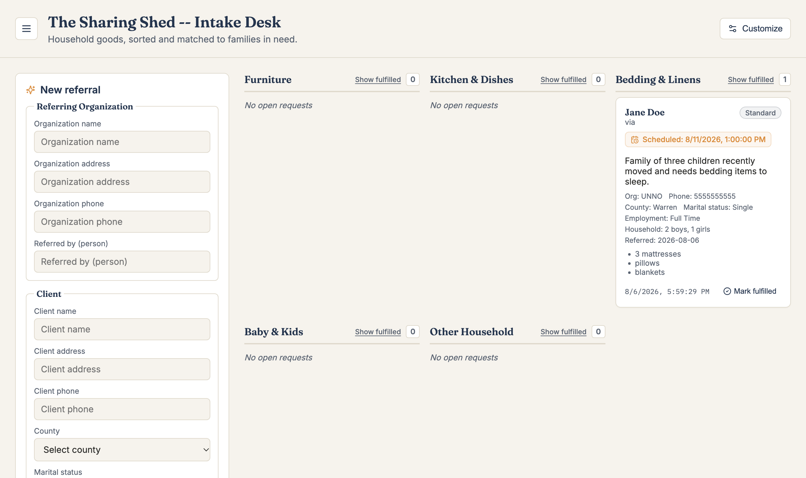

The problem
The Sharing Shed is a nonprofit that collects donated household goods like furniture, kitchenware, and bedding. It gives them to people getting back on their feet, often after a tragedy. Partner organizations refer families to them, and I got involved through connections with its board.
Intake was all paper-based and scheduled in a messy Google Calendar. The time spent per referral wasn't the main issue. The issue was confusion: referrals got lost, people who needed help fell through the cracks, and it could take days or weeks after a referral before a family actually got the help they needed.
What I built
- Structured intake form: the referring organization, client and household details, items needed, and free-text notes.
- AI triage: Claude reads the referral and returns a category, an urgency level, a one-line summary, and a clean list of items.
- Bins dashboard: requests land in labeled bins such as Furniture or Bedding & Linens. Staff can schedule pickups and mark requests fulfilled.
- Configurable, not hardcoded: staff can edit categories and urgency levels in the app, so other organizations can adapt it to their own intake process.
- Secure by design: the backend owns the database and the API key, so no proprietary information is exposed to the front end.

How it's built
- FastAPI backend with SQLite
- React + Vite frontend talking to the backend over HTTP
- Anthropic Claude API for classification and extraction
What I learned
Precision matters with AI. To get consistent, usable answers from Claude's API, I had to write precise prompts and set clear rules for what it should return.
Build for the people, not just the problem. A technical solution can do the work, but it's the people who use it that matter most. Talking openly with staff, giving demos, and learning about their daily workflows let me build what they needed instead of what I assumed they needed.